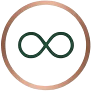

Koivu & Kupari Puusepät
Käsityötä puusta – kestävää laatua sukupolvien yli
Pyydä ilmainen suunnitelmaMiksi valita meidät
Koivu & Kupari on joensuulainen perheyritys, joka on palvellut alueen asukkaita yli 15 vuoden ajan. Meille jokainen projekti on tärkeä, oli kyse sitten pienestä korjauksesta tai kokonaisen keittiön rakentamisesta. Käytämme vain kestäviä, ekologisia materiaaleja ja suosimme kotimaisia puulajeja. Työmme takana seisoo vahva ammattitaito ja intohimo käsityöhön Joensuussa ja muualla Pohjois-Karjalassa.
Asiakkaamme arvostavat sitä, että heidän toiveensa otetaan vakavasti ja toteutus tehdään sovitussa aikataulussa. Meiltä saat henkilökohtaista palvelua ja ratkaisuja, jotka kestävät vuosikymmeniä.
Yksilöllinen suunnittelu
Jokainen projekti räätälöidään juuri sinun tarpeisiisi ja tilaasi sopivaksi

Kestävät materiaalit
Käytämme laadukkaita kotimaisia puulajeja ja ekologisia pintakäsittelyaineita
Paikallista osaamista
Joensuulainen perheyritys, joka tuntee alueen ja palvelee nopeasti
Laatutakuu
Takaamme työnjäljemme laadun ja tarjoamme takuuhuollon kaikille projekteille
Palvelumme
Mittatilauskalusteet
Suunnittelemme ja valmistamme juuri sinun tilaasi sopivat kalusteet. Jokaisessa projektissa yhdistyvät toimivuus, estetiikka ja kestävät materiaalit.
Keittiöremontit
Muutamme keittiösi kodin sydämeksi, jossa on ilo kokata. Hoidamme projektin alusta loppuun: suunnittelusta asennukseen ja viimeistelyyn.
Kiintokalusteiden asennus
Asennamme kiintokalusteet millimetrin tarkkuudella, olipa kyse vaatehuoneista, kirjahyllyistä tai säilytysratkaisuista.
Huonekalujen kunnostus
Palautamme vanhoille huonekaluille niiden alkuperäisen kauneuden ja toimivuuden. Perintökalusteesi saavat uuden elämän.
3D-luonnokset ja suunnittelu
Näet projektin lopputuloksen jo ennen ensimmäistä sahausleikkausta. Luomme realistiset 3D-visualisoinnit.
Mitä asiakkaamme sanovat
"Tilasimme Koivu & Kuparilta koko keittiön remontin. Suunnittelu oli erittäin ammattitaista ja lopputulos ylitti odotuksemme. Keittiö on nyt kodin viihtyisin paikka!"
Joensuu
"Tarvitsimme toimistollemme räätälöidyt hyllyratkaisut. Koivu & Kupari teki meille täydelliset säilytyskalusteet, jotka sopivat tilaan kuin nakutettu. Suosittelen lämpimästi!"
Kontiolahti
"Kunnostutimme isoäidin vanhan lipastonmeidän makuuhuoneeseen. Lopputulos oli upea – huonekalu näyttää aivan uudelta, mutta säilytti alkuperäisen sielunsa. Kiitos huolellisesta työstä!"
Liperi